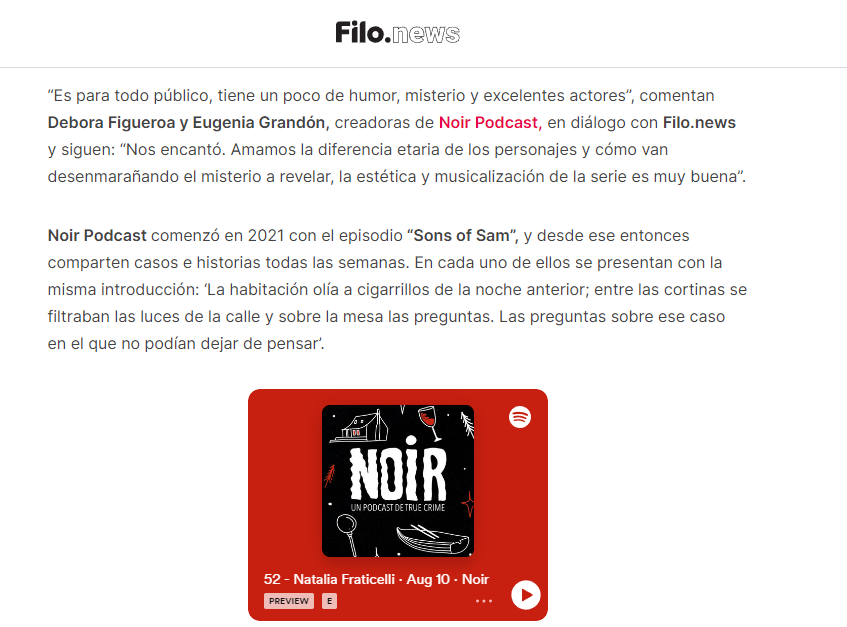
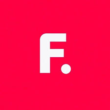

<!DOCTYPE html>

    <html lang="en"></html>
    <head>
    <meta charset="utf-8">
    <link href="https://cdn.jsdelivr.net/npm/bootstrap@5.3.0/dist/css/bootstrap.min.css" rel="stylesheet" integrity="sha384-9ndCyUaIbzAi2FUVXJi0CjmCapSmO7SnpJef0486qhLnuZ2cdeRhO02iuK6FUUVM" crossorigin="anonymous">
    <link rel="stylesheet" href="../css/style.css">
    <script src="https://kit.fontawesome.com/433bd8e367.js" crossorigin="anonymous"></script>

    <meta name="viewport" content="width=device-width, initial-scale=1">
    <title>Noir Podcast Entrevista de Filonews Cobertura de medios y/o noticias</title>
    <meta name="description" content="Apartado dedicado a mostrar la entrevista realizada por los medios de Filonews al NoirPodcast">
    <meta name="keywords" content="entrevistas, medios, filonews, cobertura, noticias, truecrime, noirpodcast,
    crimenes reales">
    <meta name="robots" content="follow">
    <meta name="author" content="Pagina Ignacio Cometti Podcast Eugenia Grandon">
    <meta name="image" content="https://noir-podcast.vercel.app/images/filonews.PNG">
    <meta property="og:title" content="Noirpodcast un Podcast de True Crime Seccion de Medios">
    <meta property="og:description" content="Apartado dedicado a mostrar la entrevista realizada por los medios de Filonews al NoirPodcast">
    <meta name="date" content="2023-08-28">


</head>
<body>

  <Header>
    <ul class="nav justify-content-end enlace1">
        <li class="nav-item">
          <a class="nav-link enlace1" href="https://open.spotify.com/show/4Zh3EAkonYf5VmrE48i13p"><i class="fa-brands fa-spotify enlace1"></i>Spotify</a>
        </li>
        <li class="nav-item">
          <a class="nav-link enlace1" href="https://www.instagram.com/noir.podcast/"><i class="fa-brands fa-instagram enlace1"></i>Instagram</a>
        </li>
        <li class="nav-item">
          <a class="nav-link enlace1" href="https://cafecito.app/noirpodcast"><i class="fa-solid fa-mug-hot enlace1"></i class>Cafecito</a>
        </li>
        <li class="nav-item">
          <a class="nav-link enlace1"  href="https://www.tiktok.com/@noirpodcast"><i class="fa-brands fa-tiktok enlace1"></i>TikTok</a>
        </li>
      </ul></Header>

          <nav class="navbar enlace1">

            <a href="../index.html" class="enlace1" >Inicio</a>
            <a href="../pages/episodiosdestacados.html" class="enlace1">Episodios Destacados</a>
            <a href="../pages/asesinosinfames.html" class="enlace1">Asesinos Infames</a>
            <a href="../pages/medios.html" class="enlace1">Medios</a>
            <a href="../pages/contacto.html" class="enlace1">Contacto</a></nav> </div>

            <div class="titulo1">
              Ultimas Entrevistas Realizadas</div>

    <div class="entrevistafilo">
      <div class="texto2">
    Estamos muy agradecidas por esta entrevista que nos realizó <br> Micaela Robles 
    para Filo.news donde pudimos <br> contar como se originó 
    este proyecto y cual es el motor que lo alimenta.</div>
    <div class="filofoto">
    </div>
    </div>
<div class="entrevistalink">
  <div class="texto3">Link de la Entrevista en el icono de Filo. </div> <a
  href="https://www.filo.news/cine-y-series/Only-Murders-in-the-Building-y-el-podcast-de-true-crime-en-Argentina-20220811-0079.html" Target="_blank">
  </a></div>

<script src="https://cdn.jsdelivr.net/npm/bootstrap@5.3.0/dist/js/bootstrap.bundle.min.js"
integrity="sha384-geWF76RCwLtnZ8qwWowPQNguL3RmwHVBC9FhGdlKrxdiJJigb/j/68SIy3Te4Bkz" crossorigin="anonymous"></script>
</body>
</html>